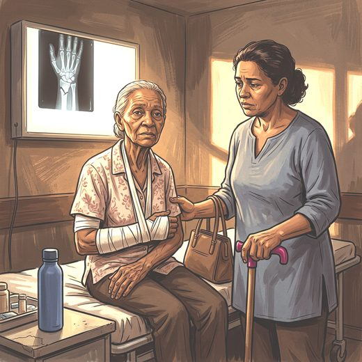

Ferramenta desta aula
Quedas — estratificação de risco. Roda no navegador, sem cadastro.
Consulta rápida à beira do leito
Condutas, doses e interações.
Referências da aula · 4
- Chen LK, Hsiao FY, Akishita M, et al. A focus shift from sarcopenia to muscle health in the Asian Working Group for Sarcopenia 2025 Consensus Update. Nat Aging. 2025;5(11):2164-2175. doi:10.1038/s43587-025-01004-y.DOI
- Montero-Odasso M, van der Velde N, Martin FC, Petrovic M, Tan MP, Ryg J, et al. World guidelines for falls prevention and management for older adults: a global initiative. Age Ageing. 2022;51(9):afac205. PMID 36178003. doi:10.1093/ageing/afac205.PubMedDOI
- Kirk B, Zanker J, Duque G. Osteosarcopenia: epidemiology, diagnosis, and treatment-facts and numbers. J Cachexia Sarcopenia Muscle. 2020;11(3):609-18. PMID 32202056. doi:10.1002/jcsm.12567.PubMedDOI
- Cruz-Jentoft AJ, Bahat G, Bauer J, Boirie Y, Bruyère O, Cederholm T, et al. Sarcopenia: revised European consensus on definition and diagnosis. Age Ageing. 2019;48(1):16-31. PMID 30312372. doi:10.1093/ageing/afy169.PubMedDOI
Documentos oficiais
Leis e publicações do Ministério da Saúde sobre o cuidado da pessoa idosa, de acesso livre.
Abrir os documentos